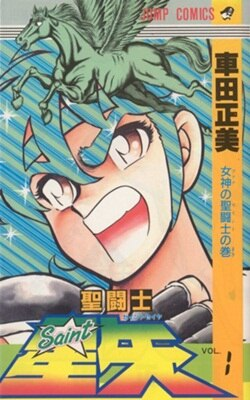

Conteúdo
Inicio Enredo ProduçãoOs Cavaleiros do Zodíaco
Saint Seiya (聖闘士星矢セイントセイヤ, Seinto Seiya; Tradução Adaptada: "O Santo Guerreiro Seiya") ou Os Cavaleiros do Zodíaco (nos países lusófonos) é uma série japonesa de mangá e anime escrito e ilustrada por Masami Kurumada. Foi publicada originalmente na revista Weekly Shōnen Jump de dezembro de 1985, sendo sua primeira edição divida em duas partes entre dezembro de 1985 e janeiro de 1986 (partes 1 e 2 respectivamente), até dezembro de 1990.
Foi adaptada para anime de 145 episódios pelo estúdio Toei Animation (o mesmo que produziu Dragon Ball, Sailor Moon, Digimon, One Piece e Zatch Bell! e co-produziu Transformers e Dungeons & Dragons) de 1986 a 1989.
Saint Seiya começou a ser conhecido no ocidente como Os Cavaleiros do Zodíaco depois que se tornou sucesso na França em 1988, onde recebeu o nome de Les Chevaliers du Zodiaque, o que foi também o primeiro lançamento estrangeiro da série. Tanto o mangá original quanto a adaptação em anime foram muito bem sucedidos em vários países asiáticos, europeus e latino-americanos, No entanto, nenhum deles foi dublado em inglês até 2003. Quatro filmes originais foram exibidos nos cinemas japoneses no período de 1987 a 1989. Porém o anime foi cancelado e ficou inacabado em 1989, deixando, por um longo tempo, uma parte do mangá sem animação.
Em 2002, a Toei Animation continuou o anime na forma de três séries OVAs de 31 episódios em Saint Seiya: Hades, tendo finalizado em 2008, a fim de adaptar o restante da história do mangá. Seguindo este renascimento da franquia, um quinto filme, Prólogo do Céu foi exibido em 2004, apesar de se passar depois da saga de Hades.
Em 2006, o autor Kurumada retomou a publicação do mangá, a partir da conclusão da obra original, continuando a história na sequência oficial Saint Seiya: Next Dimension.
Um sexto filme remake da série clássica em CGI, A Lenda do Santuário, estreou em junho de 2014 no Japão e em setembro no Brasil. Embalado pelo filme, em 30 de agosto a animação foi completada, após 20 anos desde a primeira exibição no Brasil.
Em 2016, para comemorar o trigésimo aniversário do mangá Saint Seiya (Complete Works of Saint Seiya) no Japão, ocorreu uma grande exposição contendo diversos produtos fabricados para a série, como as armaduras em tamanho real. Anteriormente em 2016, algumas armaduras foram exibidas no Brasil durante o evento Comic Con Experience, em São Paulo. Numerosos produtos comemorativos (um artbook, um CD da trilha sonora, action figures, bolsas, pinturas, carteles, figuras, relógio, etc...) para o 30º aniversário do manga e de animação, foram lançados em 2016. A edição definitiva (Kanzenban) do mangá clássico de Saint Seiya foi lançada no Brasil pela Editora JBC. No Japão, o Kanzenban foi lançado entre 2005 e 2006 e possui 22 volumes. Esta versão é feita com um material de melhor qualidade e contém algumas páginas coloridas por volume.
No verão de 2019 houve uma nova exposição comemorativa das obras de Masami Kurumada em Taiwan, onde numerosas armaduras da obra original de Saint Seiya foram exibidas, perfeitamente reproduzidas em uma escala de 1:1. Além disso, também foram vendidos numerosos produtos comemorativos do mangá de Masami Kurumada.
Em 2021 começa no Japão a publicação de uma nova edição do mangá original Saint Seiya de Masami Kurumada chamada Saint Seiya Final Edition, com diálogos ampliados e modificados, e com adição de capítulos inéditos.
Em 19 de julho de 2019, saiu na Netflix (plataforma de streaming) o remake de 12 episódios da primeira parte da série clássica de Saint Seiya, lançado em 3D CGI, chamado Knights of the Zodiac: Saint Seiya. A sequência teve estreia na Crunchyroll com subtítulo Batalha do Santuário, com 12 episódios na segunda temporada (de 2022) e mais 12 na terceira (2024). Essas duas temporadas contam a batalha nas 12 casas do Zodíaco, a saga do Santuário da série clássica.
Um filme live action intitulado Os Cavaleiros do Zodíaco - Saint Seiya: O Começo, baseado na clássica série Saint Seiya, foi lançado nos cinemas em todo o mundo em 2023.
Enredo
O enredo se concentra em cinco órfãos chamados Seiya (significa "Flecha Estelar"), Shiryu, Hyoga, Shun e Ikki, que foram forçados a ir para vários cantos do mundo para se tornarem cavaleiros, guerreiros mitológicos que protegem Athena, a Deusa grega da sabedoria e da guerra, que reencarna periodicamente como humana no planeta Terra com o objetivo de protegê-lo de forças maquiavélicas, ou seja, protegê-lo dos Deuses do Olimpo, que desde o início dos tempos se enfrentam para decidir qual deles irá dominar por completo o mundo. Enquanto Shiryu vai para os Cinco Picos de Rozan (China) para obter sua armadura de bronze de dragão, uma das 88 vestes sagradas usadas pelos 88 guerreiros da deusa Athena para enfrentar as forças do mal, Hyoga vai para a Sibéria (Rússia) para obter a armadura de bronze de cisne, Shun vai para a ilha de Andrômeda obter sua armadura de Andrômeda, Ikki vai para a Ilha da Rainha da Morte para se tornar o cavaleiro de fênix e Seiya vai para o santuário da Grécia para obter a Armadura de Bronze de Pégaso.
Após despertar o poder dos Cavaleiros, que é uma essência espiritual chamada de Cosmo (que se originou com o Big Bang), Seiya, após 6 longos anos de treinamento intensivo, se torna o cavaleiro de Pégaso e retorna ao Japão para encontrar sua irmã mais velha, pois esta havia desaparecido no mesmo dia em que ele foi ao Santuário. Saori Kido – a neta de Mitsumassa Kido, o homem responsável por enviar os órfãos para o treinamento – fez um trato com Seiya, pedindo para que participe de um torneio chamado de Guerra Galática, onde todos os órfãos que sobreviveram ao rigoroso treinamento e se tornaram cavaleiros iriam lutar entre si, e o vencedor dentre eles receberia a Armadura de Ouro de Sagitário, uma das armaduras mais poderosas do arsenal de Athena que só pode ser usada por um cavaleiro de alto poder e coragem. O trato era que se Seiya vencesse o torneio, Saori ajudaria na busca por sua irmã.
Porém, após algumas lutas que mostraram o poder de cada guerreiro ali, o torneio é interrompido pelo vingativo Cavaleiro de Fênix, Ikki, irmão mais velho de Shun, que tenta eliminar os vestígios de sua ligação com as pessoas que o forçaram a seguir o duro treinamento para se tornar um guerreiro – roubando partes da Armadura de Sagitário junto com seus cavaleiros negros, que são versões malignas dos cavaleiros de Athena. Eles usam armaduras chamadas de "armaduras negras", que imitam as armaduras de bronze, mas com coloração predominantemente preta. Esses cavaleiros não seguem os ideais de justiça e lealdade que os Cavaleiros de Athena defendem. Pelo contrário, lutam por interesses próprios, poder ou servem a mestres malignos. Seiya e os outros se recuperam e decidem ir atrás de Ikki, com o objetivo de recuperar as partes roubadas da armadura de ouro. Porém, única e exclusivamente no mangá, a batalha contra Ikki e seus cavaleiros negros acontece embaixo do Monte Fuji, enquanto no anime ela acontece no Vale da Morte (sem local definido na obra). Depois de sucessivas batalhas contra o Pégaso, Dragão, Cisne e Andrômeda negros, Seiya e os outros vão ao encontro de Ikki para um duelo final, conseguindo encurralá-lo com o poder da união. Com a derrota de Ikki, os Cavaleiros de Bronze descobrem que todos são irmãos, filhos do mesmo pai, que nada mais era do que Mitsumassa Kido, o homem responsável por enviar os jovens para localidades distintas para se tornarem cavaleiros, e logo após isso são atacados pelos Cavaleiros de Prata, cavaleiros originalmente mais poderosos que eles, visto que na hierarquia dos 88 cavaleiros de Athena, os cavaleiros de prata ficavam em segundo lugar no quesito poder, e foram enviados pelo Grande Mestre do Santuário para eliminar Seiya e os outros.
Enquanto lutam, os Cavaleiros de Bronze descobrem que Saori é a reencarnação de Athena e que o Grande Mestre, líder do santuário e comandante das tropas de cavaleiros, tentou matá-la ainda bebê, pois tinha o objetivo de se tornar um Deus e comandar o mundo no lugar de Saori. Mas foi impedido pelo Cavaleiro de Ouro de Sagitário, Aioros, que salva Saori, foge do santuário com ela e acaba sendo acusado de traição pelo Grande Mestre, que aproveitou a oportunidade para incriminar Aioros, que é morto em seguida por outros Cavaleiros de Ouro. Antes disso, ele entrega Saori a um homem, que se torna seu avô adotivo, mais conhecido como Mitsumassa Kido. Decididos a apoiar Saori, os Cavaleiros, após derrotarem inúmeros Cavaleiros de Prata, partem para o Santuário para enfrentar o Grande Mestre, mas ao chegarem no local, descobrem que terão que passar por doze templos até chegarem ao salão do mestre, e em cada templo havia um Cavaleiro de Ouro preparado para matá-los, além de serem abordados por Tremmy de Sagita, um Cavaleiro de Prata enviado pelo mestre para liquidar Seiya e os outros. Nesta batalha, Saori é gravemente ferida por uma flecha especial advinda do golpe de Tremmy. Devido a isto, os Cavaleiros começam a tentar atravessar as doze casas do zodíaco, pois antes de morrer, Tremmy disse que o único que poderia salvar Saori da morte era o Grande Mestre Ares.
No caminho, eles são confrontados por diversos Cavaleiros de Ouro. Após diversas batalhas, Seiya chega ao templo do Grande Mestre e descobre que este é um dos 12 Cavaleiros de Ouro, Saga de Gêmeos, que matou o antigo Grande Mestre, Shion de Áries, com um ataque surpresa quando o mesmo estava distraído, em busca de poder. Tal fato ocorreu pois Shion estava em busca de um sucessor para ser o mais novo Grande Mestre do Santuário, e escolheu Aioros de Sagitário para sucedê-lo, para a infelicidade e fúria de Saga, que invadiu os aposentos de Shion algumas horas após este último ter proclamado Aioros como seu sucessor e o matou com requintes de crueldade, e se transformou no novo ditador do Santuário da Grécia.
Saga, por ser o Cavaleiro da constelação de Gêmeos, é atormentado por suas duas faces, a face do bem e a do mal. Durante o período em que esteve como Mestre do Santuário, a face má dominou sobre a boa (na verdade de acordo com o mangá Saint Seiyan Origins, o lado mal de Saga era na verdade um lêmur, estrela maligna do infortúnio que o possuiu por obra de Ker, irmã gêmea de dois poderosos deuses que aparecerão mais pra frente na história). Após o sacrifício de Ikki e com a ajuda do Cosmo de seus amigos, Seiya derrota Saga e usa o reflexo do sol no escudo da armadura de Athena para curar Saori. Em seguida, com a parte boa imperando sobre si, Saga comete suicídio como forma de autopunição na frente da própria deusa.
Na segunda saga do mangá, após esta longa batalha contra Saga, o deus grego dos mares Poseidon reencarna no corpo de um jovem humano chamado Julian Solo, com o objetivo de inundar o planeta Terra. Saori, ao perceber o perigo iminente e pensando em uma forma de proteger Seiya e os outros que estavam no hospital, decide ir ao templo submarino do tio na tentativa de resolver a situação de maneira diplomática, mas Julian a aprisiona. Seiya, Hyoga, Shun e Shiryu vão ao templo e enfrentam os Marinas, que são cavaleiros subordinados de Poseidon e possuem um poder similar aos próprios Cavaleiros de Ouro. Enquanto isso, Ikki descobre que o responsável pelo renascimento de Poseidon e por toda aquela guerra é o irmão gêmeo de Saga, Kanon de Gêmeos, que manipulou Julian e libertou a alma de Poseidon que foi aprisionada por Athena em uma ânfora na era mitológica. Durante a batalha final, o espírito de Poseidon desperta dentro do corpo de seu hospedeiro, controlando completamente seu poder e se tornando uma terrível ameaça para os cavaleiros que, com o auxílio das armaduras enviadas pelos Cavaleiros de Ouro, conseguem derrotar o deus dos mares. Salva pelos Cavaleiros, Saori guarda a alma de Poseidon em uma ânfora e a saga acaba com um grande cliffhanger para a próxima saga.
A saga seguinte do mangá mostra a ascensão de Hades, o deus do submundo e o maior inimigo de Athena desde os tempos mitológicos. Ele reencarna após se libertar de sua prisão (que havia sido imposta por Athena após ela ter vencido a última guerra santa entre ambos). Seu propósito era lançar a terra em trevas criando o chamado "Grande Eclipse", que nada mais era do que ele alinhar todos os planetas do sistema solar em uma longa fila, além de colocar a lua na frente do sol, com o objetivo de fazer com que a luz solar não fosse para a terra, transformando o planeta em um local inóspito que seria nada mais do que uma extensão de seu domínio, o mundo dos mortos. Para isso ele revive os Cavaleiros de Ouro mortos na batalha das doze casas e o Grande Mestre Shion de Áries, oferecendo nova vida em troca de fidelidade, e os envia ao Santuário para matar Athena junto de seus espectros, que são cavaleiros fiéis a Hades.
Os Cavaleiros de Ouro que restam conseguem rechaçar o ataque, mas Saori entende que os cavaleiros ressuscitados só aceitaram a oferta de Hades para poder contar algo a ela e, assim que ela descobre o que é, comete suicídio enfiando uma adaga na sua garganta. Ela faz isso porque entende que precisa ter acesso ao submundo, para enfrentar Hades com a ajuda de seus Cavaleiros no domínio do próprio inimigo, uma vez que assim ela poderia ter acesso e destruir o corpo real de Hades, já que Hades usa a mesma tática de Poseidon, de possuir um corpo humano e lutar contra Athena utilizando este corpo, enquanto mantém seu verdadeiro escondido no mais profundo do mundo dos mortos.
Shion revela a intenção real dos Cavaleiros ressuscitados para os Cavaleiros de Bronze, e restaura suas armaduras com o sangue de Athena que havia ficado no local do suicídio. No submundo, os Cavaleiros de Bronze enfrentam mais Espectros de Hades e Pandora, a irmã humana de Hades e líder das tropas de espectros do imperador. Em Giudeca, a oitava e última das prisões do inferno, onde Hades costuma ficar, os Cavaleiros de Ouro se juntam com a alma dos Cavaleiros de Ouro já mortos e abrem o muro das lamentações para que os Cavaleiros de Bronze possam passar para os Campos Elísios, mas isto custa a vida de todos eles. Os Cavaleiros de Bronze conseguem atravessar o caminho até os Campos Elísios somente porque suas armaduras foram banhadas com o sangue de uma deusa. Apesar de Ikki não ter tido sua armadura banhada pelo sangue de Athena, atravessa o caminho até os Campos Elísios com a ajuda de Pandora.
Nos Campos Elísios, os cavaleiros lutam contra o deus da morte, Thanatos, e o deus do sono, Hypnos, onde desenvolvem suas armaduras divinas. Na batalha final contra o deus da morte, os Cavaleiros, já com as Armaduras Divinas e juntamente com Saori, atacam Hades. Seiya sacrifica-se ao receber o ataque final de Hades que iria contra a deusa, que revida junto dos outros cavaleiros e derrota o imperador do submundo, mas pagando um preço altíssimo, visto que Seiya entra em estado de coma e recebe uma maldição após receber o ataque de Hades.
Após isso, iniciam-se os acontecimentos de Next Dimension, que nada mais é do que uma parte da história onde Saori, vendo que Seiya estava cada vez mais perto da morte por estar sendo dilacerado pela maldição de Hades por dentro, decide ir com Shun de Andrômeda pedir ajuda a seus irmãos Deuses do Olimpo para viajar ao passado e destruir a espada de Hades, com o objetivo de quebrar a maldição que está afligindo Seiya. Porém a ideia dá errado e Athena e Shun vão parar na guerra santa anterior contra Hades, há 243 anos atrás, na época em que o Mestre Ancião de Shiryu era conhecido como Dokko, o Cavaleiro de Ouro de Libra, e o mestre de Mu de Áries, Shion de Áries, era seu melhor amigo e lutava ao seu lado usando a Armadura de Ouro de Áries.
Produção
A princípio, Kurumada planejava criar um mangá com tema de luta livre, já que ele gosta de escrever sobre esportes individuais ao invés de esportes coletivos. Ele foi inicialmente inspirado por The Karate Kid (1984) para conceber uma história sobre um jovem karateca chamado Seiya encontrado por um mestre de karatê e sua assistente; no entanto, seu departamento editorial não aprovou a ideia. Como ele achava que esportes simples como judô ou karatê não seriam interessantes o suficiente, ele acrescentou aspectos da mitologia grega e constelações para torná-lo inovador. No entanto, o conceito básico de Saint Seiya era ser um mangá nekketsu com um toque de "moda" adicionado pelas Armaduras dos Cavaleiros. Após o rápido cancelamento de seu trabalho anterior, Otoko Zaka, em 1984, esse "senso de moda" foi algo que Kurumada pensou que seria um aspecto que atrairia fãs, tornando-o diferente de seu mangá anterior com uniformes simples do ensino médio. Embora pareçam armaduras medievais europeias, Kurumada disse que sua principal inspiração para as Armaduras foi o livro de ilustração de Hajime Sorayama de 1983, Sexy Robot. Além da moda, as Armaduras foram criadas porque Kurumada queria que os personagens lançassem faíscas explosivas e as Armaduras eram uma forma de dar-lhes alguma proteção. Inicialmente, ele não conseguia decidir que tipo de armadura seria, considerando até mesmo a kasaya budista; com base no motivo grego, ele desenhou as atuais Armaduras dos Cavaleiros.
Quando Kurumada estava no processo de criação de Saint Seiya, ele deu a Seiya o nome Rin no início, já que Kurumada iria intitular seu mangá "Ginga no Rin" (Rin da Galáxia). No entanto, como Kurumada continuou desenvolvendo seu mangá, ele decidiu mudar o nome para Seiya, que era mais adequado. Primeiro ele escreveu o nome com o kanji que significava "Flecha Sagrada", para relacioná-lo com a condição de Seiya como um Cavaleiro, mas depois decidiu usar o kanji que significava "Flecha Estelar", para enfatizar a constelação e o motivo mitológico. Finalmente, ele também mudou o título do mangá, para Saint Seiya, uma vez que desenvolveu completamente o conceito dos Cavaleiros. Além disso, Kurumada afirmou que uma das primeiras ideias que ele concebeu para Saint Seiya foi o Meteoro de Pégaso. Como seu mangá usaria as constelações como um tema muito importante e sempre presente, ele queria que seu protagonista tivesse um movimento especial que seria como uma chuva de meteoros.
Quando Kurumada desenhou a imagem de Seiya, ele se inspirou em seu personagem Ryuji Takane, o protagonista de seu mangá de sucesso Ring ni Kakero, que ele criou 9 anos antes de Seiya. A maioria dos protagonistas das obras de Kurumada tem uma semelhança com Ryuuji, já que Kurumada adota a técnica Star System do reverenciado Osamu Tezuka (um elenco estável de personagens). O mesmo processo é feito com quase todos os outros personagens da série. Depois de criar Seiya como um personagem nekketsu, ele decidiu dar diferentes traços de personalidade para cada um dos outros personagens principais: Shiryu é o "justo e sério"; Hyoga é "posado e elegante"; Shun é o "menino adorável"; e Ikki é o lobo solitário.
Os Cavaleiros do Zodiaco
